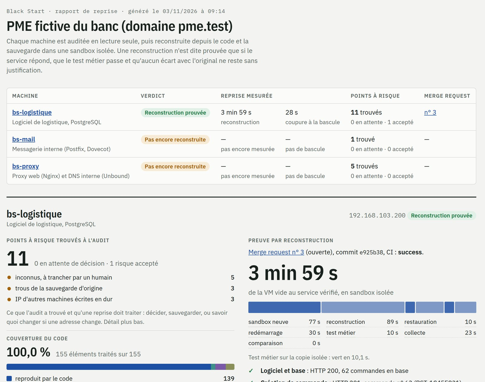

Restaurer une image infectée, c'est redémarrer l'attaquant avec vous. Black Start reconstruit vos serveurs critiques sur une base saine, depuis le code et vos sauvegardes, puis prouve que votre activité repart. Mesures à l'appui.
Une cyberattaque coûte en moyenne 13 M€ à une ETI (montant déclaré, ANSSI et CLUSIF cités par le Sénat). Ce qui allonge la reprise : des serveurs configurés à la main, des sauvegardes jamais testées, un savoir qui tient dans une seule tête.
Une image restaurée peut contenir la porte dérobée de l'attaquant. Restaurer n'est pas reconstruire proprement.
Les configurations, crons, binaires et scripts vivent dans la tête d'une seule personne. Son départ est un risque métier.
Avoir un backup ne prouve rien. Une VM qui démarre ne prouve pas que l'entrepôt peut expédier une commande.
Black Start inventorie, classe, reconstruit et vérifie vos serveurs critiques. Votre production n'est jamais modifiée sans votre validation.
Un script déterministe scanne chaque VM : paquets, configs modifiées, services, crons, ports, secrets. Rien n'est modifié.
Chaque élément est classé par règle : reproduit par le code, donnée à restaurer, secret au coffre, ou inconnu : un modèle local propose, un humain décide.
Le code Ansible est généré depuis l'inventaire. La VM est recréée dans une sandbox isolée depuis le code et les sauvegardes. Rien n'est modifié en production.
Tests de bout en bout : la commande passe, le mail part, le DNS répond. Chaque écart est justifié ou bloque la validation.
Sur notre banc de test (une PME fictive avec un logiciel de logistique, mail, proxy et DNS), voici ce que Black Start a prouvé sur la machine logistique :

Un cabinet équipé de son propre outil : l'outil traite les cas courants, nos consultants les exceptions. Vous recevez des preuves, pas un classeur de procédures.
1 semaine · 5 à 10 applications critiques
Au forfait · VM critiques reconstruites
Mensuel · Surveillance continue
Les éditeurs de sauvegarde vérifient qu'une restauration démarre. Les outils d'infrastructure as code codifient surtout le cloud. Aucun n'audite l'intérieur des VM on-premise pour les reconstruire depuis le code.
| Critère | Veeam / Éditeurs backup | Firefly / ControlMonkey | ESN / Cabinets PRA | Black Start |
|---|---|---|---|---|
| Audit du contenu des VM | ✗ | ✗ | ~ manuel | ✓ |
| Reconstruction depuis le code | ✗ | ~ cloud, hors contenu des VM | ~ manuel | ✓ |
| Test de reprise automatisé | ✓ | ~ cloud | ✗ | ✓ |
| Preuve métier de bout en bout | ~ scripts à écrire | ✗ | ~ exercice ponctuel | ✓ |
| On-premise / VM Linux | ✓ | ~ vSphere (Firefly) | ✓ | ✓ |
| IA avec modèle local (données souveraines) | - | ✗ SaaS | - | ✓ |
Sources : Veeam SureBackup · Firefly vSphere · ControlMonkey
En une semaine d'audit en lecture seule, vous savez ce qui empêcherait vos applications critiques de repartir. Rien n'est modifié sur votre production.
Demander un audit →Ou écrivez-nous à contact@blackstart.fr